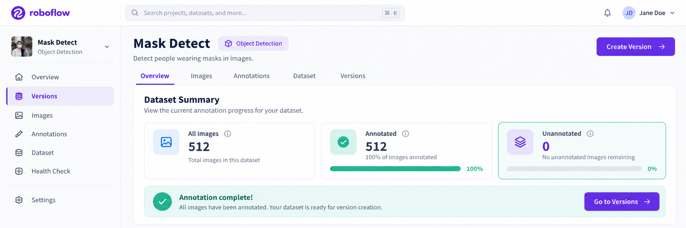
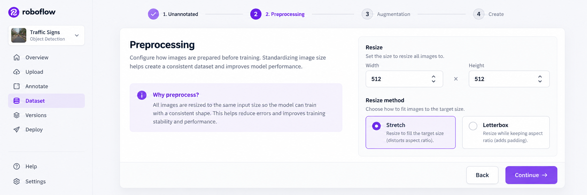
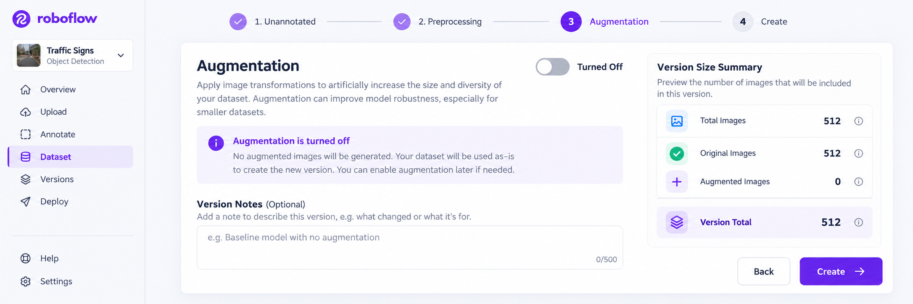
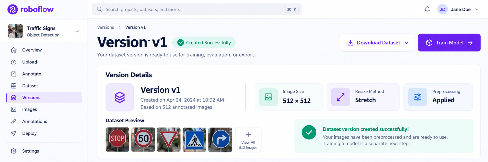

ROBOFLOW · COMPUTER VISION DATASET
Dataset Pipeline · Reproducible Dataset Snapshot
Roboflow 06. Dataset Version
Dataset Version · Preprocessing · Augmentation · Create Version
Version은 단순히 번호를 하나 붙이는 기능이 아닙니다. 검수한 Image, Bounding Box, Class와 Preprocessing·Augmentation 설정을 함께 묶어 재현 가능한 학습 데이터 기준점으로 만드는 과정입니다. 설정 단계의 Continue와 실제 Version을 생성하는 Create를 구분해야 합니다.
학습 목표
-
01
Project Dataset과 Dataset Version의 차이를 설명한다.
-
02
Version을 Dataset Snapshot으로 이해하고 재현성과 연결한다.
-
03
Preprocessing과 Augmentation의 역할을 구분한다.
-
04
Resize 512×512와 Stretch가 교안 화면의 설정 예시임을 설명한다.
-
05
Augmentation Turned Off 상태를 오류가 아닌 하나의 설정으로 해석한다.
-
06
Continue와 Create가 서로 다른 동작임을 구분한다.
-
07
Version Notes와 Version Metadata가 Dataset 실험 기록에 왜 필요한지 설명한다.
-
08
생성한 Version이 Download Dataset, YOLO Folder Tree, data.yaml로 이어지는 흐름을 설명한다.
교안 직접 흐름: Unannotated = 0 → Versions → Preprocessing → Continue → Augmentation → Continue → Version Notes → Create → v1 → Download Dataset
01 · LESSON GOAL
검수한 Dataset을 Version으로 고정하기
이번 단원의 목표는 현재 Project Dataset에 Preprocessing과 Augmentation 설정을 적용한 뒤 학습에 사용할 Dataset Version을 만드는 것입니다.
Project Dataset
- 계속 수정 가능
- Image·Annotation 존재
- Version 아직 없음
- 처리 설정 선택 전
Dataset Version v1
- 특정 시점의 Dataset
- Preprocessing 기록
- Augmentation 기록
- Download 가능
Model 성능을 비교하려면 어떤 Image·Annotation·처리 설정을 사용했는지 다시 확인할 수 있어야 합니다.
02 · PIPELINE POSITION
Roboflow 전체 Workflow에서의 위치
03 · CORE CONCEPTS
Dataset Version 핵심 용어
| 용어 | 의미 | 확인 질문 |
|---|---|---|
| Versions | Dataset Version 생성·관리 메뉴 | 어디에서 Version을 만드는가? |
| Dataset Version | 특정 Dataset 상태와 처리 설정을 묶은 결과 | 어떤 학습 데이터 기준점인가? |
| Preprocessing | 학습 전에 Image 입력 규격을 정리하는 과정 | Image를 어떤 크기와 방식으로 변환할까? |
| Resize | 서로 다른 Image 크기를 일정하게 변환 | Model 입력 크기를 어떻게 맞출까? |
| Stretch | 목표 크기에 맞춰 가로·세로를 늘이거나 줄이는 방식 | 비율 변화 가능성을 확인했는가? |
| Augmentation | Image 변형을 이용해 데이터 다양성을 확장 | 추가 변형이 필요한가? |
| Continue | 현재 설정을 확인하고 다음 설정 단계로 이동 | 다음 단계로 이동할 준비가 되었는가? |
| Create | 현재 설정으로 실제 Dataset Version 생성 | Version을 실제로 만들 것인가? |
| Version Notes | Version의 목적과 변경 내용을 기록하는 입력란 | 이 Version은 이전과 무엇이 다른가? |
| Download Dataset | 생성한 Version을 특정 Format으로 Export | 어떤 Framework 구조로 받을 것인가? |
Dataset Version
=
Image
+
Annotation
+
Class
+
Preprocessing
+
Augmentation
04 · VISUAL UNDERSTANDING
Version은 현재 Dataset의 Snapshot
계속 수정되는 작업 공간
- Image 추가 가능
- Bounding Box 수정 가능
- Class 변경 가능
- Annotation 보완 가능
특정 시점의 Snapshot
- Dataset 상태 고정
- 처리 설정 기록
- 실험 비교 가능
- Export 기준점
SUPPLEMENT · Snapshot 개념을 이해하기 위한 설명
05 · SCREEN WALKTHROUGH
교안 화면 따라하기
화면마다 무엇을 확인하는가 → 왜 필요한가 → Dataset 상태가 어떻게 변하는가 를 함께 해석합니다.

Unannotated = 0 → Versions
- 시작 조건
- 모든 Image Labeling 완료
- 확인 상태
- Unannotated = 0
- 어디를 클릭?
- 왼쪽 메뉴 Versions
- 의미
- Dataset Version 설정 Workflow 진입

Preprocessing 설정
- 목적
- Image 입력 규격 정리
- 교안 결과 화면
- 512×512, Stretch 관련 표시
- 완료 동작
- Continue
- 주의
- 512×512와 Stretch는 교안 화면의 설정 예시

Augmentation → Create
- 교안 상태
- Augmentation Turned Off
- 기록
- Version Notes
- 최종 확인
- 설정과 Version 크기 관련 정보
- 생성 버튼
- Create

Version v1 생성 결과
- 생성 결과
- v1 Version Card
- 설정 Badge
- 512×512, Stretch 관련 표시
- 다음 Export
- Download Dataset
- 중요한 구분
- Dataset Version 생성 ≠ Model Training
Versions 이동, Preprocessing·Augmentation 단계, Continue, Create, Augmentation Turned Off, Version Notes, v1, Download Dataset, 별도 Model 상태는 교안에서 직접 확인되는 흐름입니다.
06 · UI WORKFLOW
Version 생성 조작 순서
- Unannotated = 0 확인 미Annotation Image가 남아 있지 않은지 확인합니다.
- Versions 클릭 Dataset Version 생성 Workflow로 이동합니다.
- Preprocessing 설정 Image Size와 변환 방식을 확인합니다.
- Continue 현재 Preprocessing 설정을 확인하고 다음 단계로 이동합니다.
- Augmentation 설정 Image 변형을 적용할지 결정합니다.
- Continue Augmentation 설정을 확인하고 최종 Create 화면으로 이동합니다.
- 최종 설정 검토 Preprocessing과 Augmentation 상태를 다시 확인합니다.
- Version Notes 작성 Version의 목적과 변경 내용을 기록할 수 있습니다.
- Create 현재 설정으로 실제 Dataset Version을 생성합니다.
- Version Card 확인 Version 번호, 생성 시각, 설정 Badge를 확인합니다.
- Download Dataset 생성된 Version을 원하는 Dataset Format으로 Export합니다.
07 · VERSION ANATOMY
Dataset Version에는 무엇이 포함되는가?
Images
Version 생성 시점의 Image Dataset
Annotations
Bounding Box와 Class Label
Classes
탐지할 객체 Category 구조
Preprocessing
Resize와 입력 규격 설정
Augmentation
Image 변형 적용 상태
Version Metadata
Version 번호와 생성 시점 정보
Version
=
Data Snapshot
+
Processing Configuration
08 · PREPROCESSING
학습 입력 규격 정리
Preprocessing은 서로 다른 Image를 Model이 처리할 수 있는 일정한 규격으로 변환하는 단계입니다.
생성된 Version Card에는 512×512와 Stretch 관련 Badge가 보입니다. 교안은 이 값의 선택 이유나 권장 기준까지 설명하지 않습니다.
Object Detection Preprocessing에서는 Image 크기가 바뀌어도 Bounding Box가 변환 후 객체 위치와 일치해야 합니다.
09 · RESIZE / STRETCH
512×512와 Stretch 이해
원본 비율
가로로 긴 Image와 객체 형태
512 × 512
목표 크기에 맞추며 비율이 변할 수 있음
Stretch를 해석할 때 확인할 점
SUPPLEMENT · Stretch 원리와 주의점
512×512와 Stretch는 이번 교안의 Version 결과 화면에 나타나는 값입니다. 모든 Dataset에 반드시 같은 값을 적용해야 한다는 의미는 아닙니다.
10 · AUGMENTATION
데이터 다양성 확장 설정
Augmentation은 원본 Image를 변형하여 다양한 촬영 조건을 학습 데이터에 반영하는 방법입니다.
SUPPLEMENT · 일반적인 Augmentation 예시이며 교안의 전체 Option 목록은 아님
추가적인 Image 변형을 사용하지 않는 설정입니다.
실제 서비스 환경과 관계없는 과도한 변형은 Dataset을 현실과 다르게 만들 수 있습니다.
11 · CONTINUE / CREATE
단계 이동과 실제 생성을 구분
Continue
=
설정 단계 이동
Create
=
Dataset Version 생성
12 · VERSION NOTES
Version의 목적과 변경 내용을 기록
- 왜 새 Version을 만드는가?
- 어떤 Annotation을 수정했는가?
- 어떤 Image를 추가·삭제했는가?
- Preprocessing 설정은 무엇인가?
- Augmentation 상태는 무엇인가?
- 어떤 Model 실험에 사용할 것인가?
교안은 Version Notes 입력란을 보여주지만 작성 형식, 필수 여부, Naming Rule은 설명하지 않습니다. 위 내용은 Version 관리 이해를 위한 보충 예시입니다.
교안은 숫자 3의 단위와 계산 방식, Augmentation과의 관계를 설명하지 않습니다.
13 · DATASET STATE CHANGE
Create 전후 Dataset 상태 변화
Project Dataset
Image와 Annotation은 있지만 Version은 아직 없음
Configuration
Preprocessing과 Augmentation 설정 중
Create
현재 설정으로 Version 생성
Dataset Version v1
Export 가능한 Snapshot 생성
14 · CONCEPT COMPARISON
Project · Dataset Version · Trained Model
작업 공간
- Image 관리
- Annotation 수정
- Class 관리
- 여러 Version 생성
학습 데이터 Snapshot
- 특정 Dataset 상태
- Preprocessing 설정
- Augmentation 설정
- Export 기준점
학습된 Weight
- Dataset으로 학습
- Model Architecture
- Training Hyperparameter
- Prediction 수행
교안의 Version 상세 화면에는 이 Version에 Model이 없다는 안내와 별도의 Train Model 버튼이 나타납니다.
15 · VERSION RESULT
생성된 Version Card 읽기
v1
첫 번째 Dataset Version
Image Size 관련 설정 표시
Resize 방식 관련 표시
Export Workflow 시작
교안 화면에서 512×512와 Stretch는 확인되지만 왜 이 설정을 선택했는지에 대한 설명은 제공되지 않습니다.
16 · EXPORT CONNECTION
Version에서 YOLO Dataset으로
교안 Download 화면에서는 Image and Annotation Format으로 YOLO26, Download Option으로 ZIP Download가 선택됩니다. 이는 교안 화면의 선택값이며 모든 프로젝트의 고정 규칙은 아닙니다.
최종 Folder Tree
dataset/
│
├─ train/
│ ├─ images/
│ │ ├─ person001.jpg
│ │ └─ ...
│ │
│ └─ labels/
│ ├─ person001.txt
│ └─ ...
│
├─ valid/
│ ├─ images/
│ └─ labels/
│
├─ test/
│ ├─ images/
│ └─ labels/
│
└─ data.yamldata.yaml 예제
train: ../train/images
val: ../valid/images
test: ../test/images
nc: 2
names: ['with-mask', 'without-mask']
roboflow:
workspace: objectdetect-huyv4
project: find-mask-pkqpq
version: 1
license: CC BY 4.0
train
Training Image 경로
val
Validation Image 경로
test
Test Image 경로
nc
Class 수
names
Class 이름
version
Roboflow Version Metadata
17 · TRAIN / VALID / TEST
Version 이후 Dataset Split의 역할
Model 학습
Image와 Label을 이용해 Model Weight를 학습합니다.
학습 중 검증
학습 과정에서 일반화 상태와 설정 변경 방향을 확인합니다.
최종 평가
학습에 사용하지 않은 데이터로 최종 성능을 평가합니다.
최종 data.yaml에는 train, val, test 경로가 보이지만, Version 생성 화면에서 Split 비율을 어떻게 정했는지는 교안에 자세히 설명되어 있지 않습니다.
18 · COMMON MISTAKES
초보자가 자주 하는 실수
Unannotated가 남은 상태로 Version 생성
Version으로 이동하기 전에 미Annotation Image를 확인합니다.
Versions 메뉴 진입을 생성 완료로 생각
최종 Create를 눌러야 실제 Version이 만들어집니다.
Continue와 Create 혼동
Continue는 단계 이동, Create는 Version 생성입니다.
Preprocessing과 Augmentation 혼동
입력 규격 정리와 데이터 다양성 확장을 구분합니다.
Augmentation은 반드시 On이라고 생각
교안 예시는 Turned Off 상태로 Version을 생성합니다.
Augmentation을 많이 적용할수록 좋다고 생각
실제 환경과 맞지 않는 과도한 변형은 Dataset을 왜곡할 수 있습니다.
Resize 크기만 보고 방식은 확인하지 않음
같은 크기라도 Stretch, Padding, Crop은 결과가 다를 수 있습니다.
Stretch의 객체 형태 변화를 고려하지 않음
원본 비율이 다르면 객체가 늘어나거나 눌릴 수 있습니다.
Image만 변환되고 Box는 그대로라고 생각
Object Detection 전처리에서는 Bounding Box도 함께 변환되어야 합니다.
Version Notes를 기록하지 않음
Version이 많아지면 변경 이유와 설정 차이를 찾기 어려워집니다.
Maximum Version Size의 의미를 임의로 단정
교안은 숫자의 단위와 계산 방식을 설명하지 않습니다.
Version 생성과 Export를 같은 단계로 생각
Create 이후 별도의 Download Dataset 과정이 필요합니다.
Dataset Version과 Model Training 혼동
Version은 학습 데이터이고 Model Weight는 별도로 학습합니다.
잘못된 Export Format 선택
다음에 사용할 Model Framework와 맞는 Format을 선택해야 합니다.
data.yaml 경로 오류
YAML의 경로와 실제 Folder 위치가 일치해야 합니다.
Annotation 오류를 그대로 Version으로 고정
잘못된 Box와 Class는 Export와 Model Training까지 전달될 수 있습니다.
19 · UI STATUS / ERROR READING
Error Popup보다 Version 상태를 읽는다
첨부 교안에는 Version 생성 과정의 실제 Error Popup 사례가 없습니다. 아래 표는 화면 상태를 이용한 보충 진단 기준입니다.
| 화면 상태 | 의미 | 먼저 확인할 내용 |
|---|---|---|
| No versions created yet | 아직 생성된 Version 없음 | Continue와 Create 완료 여부 |
| Create 화면 설정이 예상과 다름 | 이전 단계 설정 확인 필요 | Preprocessing·Augmentation·Edit |
| Version은 있지만 Model이 없음 | 학습 데이터만 생성된 상태 | Train Model은 별도 단계 |
| Download Dataset이 보이지 않음 | Version 미생성 가능성 | Create 완료와 Version 상세 화면 |
| Version 설정 Badge가 예상과 다름 | 잘못된 설정으로 생성 가능 | Image Size·Resize·Augmentation |
| Export Class가 예상과 다름 | Class Schema 불일치 가능성 | Project Class와 data.yaml names |
| YOLO가 Dataset을 찾지 못함 | 경로 불일치 가능성 | data.yaml과 실제 Folder 위치 |
20 · PRACTICAL CONNECTION
재현 가능한 Dataset 실험 관리
SUPPLEMENT · 실무 Version 운영
Dataset Version과 Model Experiment 연결
실험 기록표 예시
| 항목 | 기록 예 |
|---|---|
| Dataset Version | v2 |
| Class | with-mask, without-mask |
| Image Size | 512×512 |
| Resize 방식 | Stretch |
| Augmentation | Off |
| Export Format | 교안 화면 기준 YOLO26 |
| Model Experiment | exp_02 |
| 결과 | 평가 Metric과 오류 사례 기록 |
21 · INTERVIEW / REVIEW
면접 포인트
Q01. Dataset Version이란 무엇입니까?
특정 시점의 Image, Annotation, Class와 Preprocessing·Augmentation 설정을 묶어 고정한 학습 데이터 단위입니다.
Q02. Project와 Dataset Version의 차이는 무엇입니까?
Project는 계속 수정되는 전체 작업 공간이고, Version은 특정 시점의 Dataset 상태와 설정을 고정한 결과입니다.
Q03. 교안에서 Versions로 이동하기 전 확인하는 상태는 무엇입니까?
모든 Image의 Labeling이 완료되어 Unannotated = 0인 상태입니다.
Q04. Version 생성 순서는 무엇입니까?
Preprocessing과 Augmentation을 순서대로 설정하며 Continue를 누른 뒤 마지막에 Create를 클릭합니다.
Q05. Preprocessing이란 무엇입니까?
Model 학습 전에 Image를 일정한 입력 규격으로 변환하는 과정입니다.
Q06. Augmentation이란 무엇입니까?
기존 Image를 변형하여 학습 데이터의 다양성을 확장하는 과정입니다.
Q07. Preprocessing과 Augmentation의 차이는 무엇입니까?
Preprocessing은 입력 규격을 정리하고, Augmentation은 데이터 다양성을 확장합니다.
Q08. 교안 화면의 Augmentation 상태는 무엇입니까?
Turned Off 상태입니다.
Q09. Augmentation은 항상 사용해야 합니까?
아닙니다. 교안 예시도 Augmentation Off 상태로 Version을 생성합니다.
Q10. Continue와 Create의 차이는 무엇입니까?
Continue는 다음 설정 단계로 이동하고, Create는 실제 Dataset Version을 생성합니다.
Q11. Version Notes는 무엇입니까?
Version의 목적, 변경 내용, 설정 차이를 기록할 수 있는 입력란입니다.
Q12. Maximum Version Size: 3은 무엇입니까?
교안 화면에 나타나는 Version 크기 관련 정보입니다. 정확한 단위와 계산 방법은 교안에 설명되어 있지 않습니다.
Q13. 교안 Version 결과에 보이는 Image Size는 무엇입니까?
512×512 관련 표시가 보입니다. 교안은 이 크기의 선택 이유는 설명하지 않습니다.
Q14. 교안에 보이는 Resize 방식은 무엇입니까?
Stretch 관련 표시가 보입니다.
Q15. Stretch에서 주의할 점은 무엇입니까?
원본과 목표 크기의 비율이 다르면 객체 형태가 늘어나거나 눌릴 수 있습니다.
Q16. Image Resize 시 Bounding Box는 어떻게 되어야 합니까?
변환된 Image의 객체 위치에 맞게 Bounding Box 좌표도 함께 변환되어야 합니다.
Q17. Version 생성과 Model Training은 같은 단계입니까?
아닙니다. Dataset Version은 학습 데이터이고, Model Weight 학습은 별도의 Train Model 단계입니다.
Q18. Version 생성 후 다음 단계는 무엇입니까?
Download Dataset을 이용해 원하는 Dataset Format으로 Export합니다.
Q19. Version과 Export의 차이는 무엇입니까?
Version은 Dataset 상태와 설정을 고정하고, Export는 그 Version을 특정 Framework 파일 구조로 만듭니다.
Q20. 교안 Download 화면의 Format은 무엇입니까?
교안 화면에서는 YOLO26이 선택되어 있습니다.
Q21. data.yaml은 무엇입니까?
Train·Validation·Test 경로, Class 수와 이름, Roboflow Metadata 등을 정의하는 YOLO Dataset 설정 파일입니다.
Q22. data.yaml의 Version 정보는 어디에 있습니까?
roboflow Metadata 아래의 version 항목에서 확인합니다.
Q23. Version을 만드는 가장 중요한 이유는 무엇입니까?
어떤 Dataset 상태와 처리 설정을 사용했는지 구분하여 Model 실험을 재현하고 비교하기 위해서입니다.
23 · SOURCE GUIDE
교안 원문과 보충 내용 구분
교안 직접 내용
- Unannotated = 0 후 Versions 이동
- Preprocessing 단계
- Augmentation 단계
- 각 단계의 Continue
- 최종 Create
- Augmentation Turned Off
- Version Notes 입력란
- Maximum Version Size 표시
- Version v1 결과
- 512×512와 Stretch 관련 Badge
- Download Dataset
- 별도의 Train Model 상태
- 최종 data.yaml과 Roboflow Metadata
이해·실무 보충
- Dataset Snapshot과 재현성
- Resize와 Stretch의 원리
- Bounding Box 좌표 동시 변환
- 일반적인 Augmentation 종류
- 과도한 Augmentation 문제
- Version Notes 작성 예시
- Dataset Version과 Model Experiment 연결
- Production Model 추적
Preprocessing·Augmentation 전체 Option, 512×512와 Stretch의 선택 이유, Maximum Version Size 3의 단위, Train / Valid / Test Split 비율, Version 삭제·복원 방식은 교안에 자세히 설명되어 있지 않습니다.